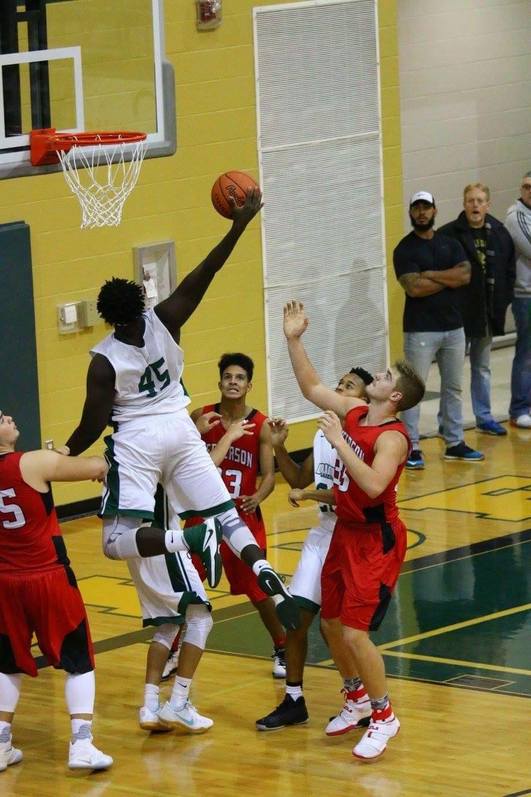

One of my main hobbies is making music. That I could say is my main hobby. I also enjoy cooking and playing basketball on my free time.
About ME

I am from Atlanta Georgia born and raised. I am 6'8 and, I used to play college basketball for Penn State University. I hurt my knee and lost my scholarship. Around that time I had no idea what to do with myself. I have been around music production since the age of 5. My mother was a rapper and my father was a music producer and, Once i got back from campus I began to get back into it. With a little hard work and connecting with some important people I manage to get a record deal. My goal is to use my musical talents to create a platform for others.
Why do I want to become a Web Developer?
My goal is to create a application that will connect underground producers and artist. It is very diffcult to connect with artist if you are an unknown music producer. My platform will make it much easier for those producers.
Contact Me
Please contact for any question or to learn anything more about me.